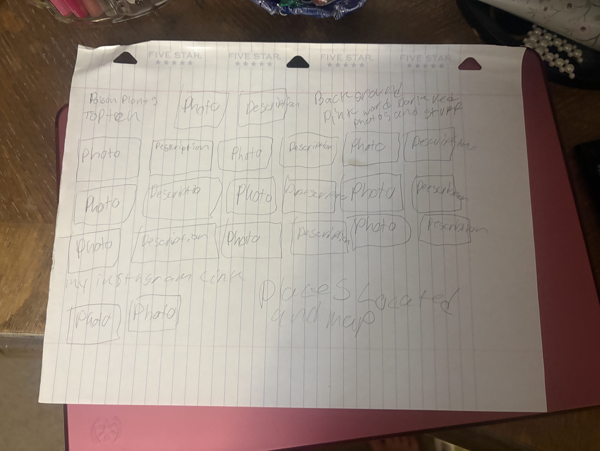

my refections oh how the story THE PSYCHOLOGY OF THE WEB DEVELOPER,MAISA IMAMOVIĆ DEEP REALITY OF A FEMALE FREELANCER so my refction on chapter 1 was that a girl from another country had made friends with a artifical intelegence bot. she did this to learn her english better. chapter two was about the graphic designer and h ow he was feeling un appreciated by his boss . howw he made the ai bot to have company while he was working. chapter three talks about the tech bro and the heiarchy of the tech world. how she is a women in a man dominated field. Maisa Imamović is learing how to make stuff digitaly better and talkikng to the ai robot. in chapter four she talks about being a unseen assistant . how the men treat her like a a dog and work her all the time. she talks about the complex behind the a simple website. so chapter five entiles how she is working so hard and her coworkers are making fun of her. they do this by calling her a Interdisciplinary Unicorn because she would never stop working to get better. she was always wanted to prove that she belonged their no matter what things are there. chapter six says how she suffers with her mental health from constantly working to prove that she deserves to be there and to have a place.she also talks about how she is burned out and lost motivation also her energy. in chapter 7 it talks about how she is pressured to conform to how the coding world works instead of doing her own thing. she wanted to be her own person not just someone who follows the crowd. in chapter 8 it talks about the Bossy Senior Web waants her to have a more simple design . she wants to make it her own and to have her ideas in her website.
so my plans for my website are not set in stone i had three ideas one was about paranormal places or deadly flowers and my friend's account. i had changed my mind alot because i firts chose my friends cahnnel but that never worked out. so i decided to either go with deadly flowers or paranormal place. i may do paranormal places because it seems cool. plus i could show off my map. buts i also dont know what i want to do
